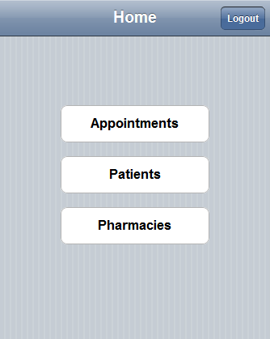
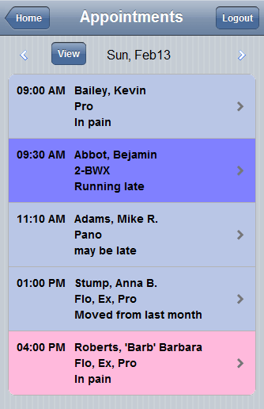

Using Mobile Synch
See Mobile Synch Setup.
Note: Mobile Synch has been replaced by ODMobile, an app that is installed right to your mobile device!
Before using Mobile Synch, you must contact Open Dental to enable, then upload and synch data.
Log In
Type https://m.opndn.com into your mobile browser. Save it as a favorite.

Type in the User name and Password that you set previously. Click Login.
Appointments

Patient Detail
Includes entire Appointment and Rx history. You can search for patients by last name only.

There are other screens that are not shown.